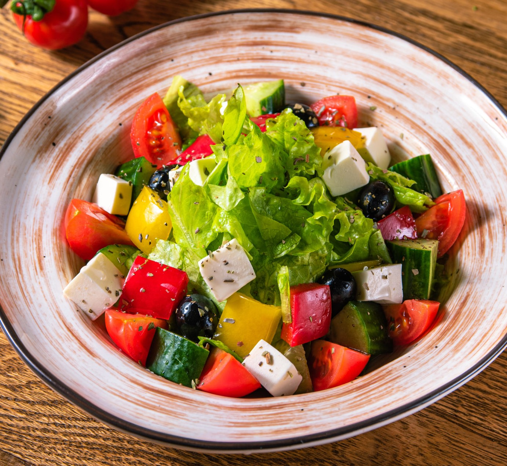

Фьюжн кулинария – гармоничное сочетание всего самого лучшего из Западной и Восточной гастрономии. Этот метод предполагает использование только самых лучших, качественных и свежих продуктов, которые идеально подходят и дополняют друг друга. Все фьюжн-блюда сбалансированы и полезны для здоровья человека, они содержат необходимое количество мяса, рыбы, злаков, овощей и фруктов. Их обязательная составляющая – специи.
Фьюжн - это всегда движение. Человек, который увлекается фьюжн, может проехать по всему миру и не найдет похожих блюд. Это похоже на произведение искусства и каждый шеф творит его сам. Самые необычные сочетания во фьюжн на самом деле очень тонко выверены. Здесь не существует каких- либо стандартов и правил. Фьюжн предоставляет возможность экспериментировать и фантазировать.
Фьюжн еда во многом вдохновлена кулинарными традициями со всего мира. Но, по сути, большинство блюд разных стран похожи, а отличаются между собой в основном ингредиентами и специями. В фьюжн кухне активно фигурируют такие специи и добавки, как кокосовое молоко, имбирь, васаби, кунжут, лимон, ягоды. Привычные блюда и продукты питания приобретают с ними необычный вкус. В Бельгии имбирь и васаби стали добавлять в традиционные бисквиты, напитки, мороженое, спреды.